Antena planar Direccional 14dBi 2,4GHz
Aquí dejo los planos de una antena Sectorial tipo Panel, muy buena antena con
una ganancia de 14dBi.
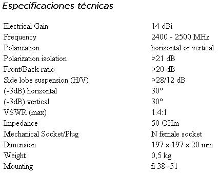
Pequeña y Ligera antena panel para uso en interiores
y exteriores. Ideal como antena cliente con una ganancia más que aceptable,
fácil de instalar y orientar.
IMAGENES de
Estas imágenes son de una antena comercial que la hemos abierto para que se pueda ver su interior, y así comprobar que no lleva nada especial que no podamos fabricar fácilmente, las medidas que aquí aparecen son aproximadas las reales están mas abajo.
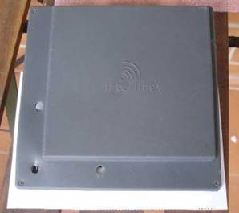 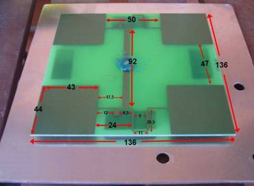 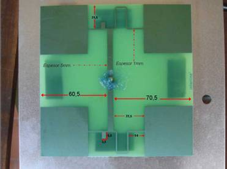
La antena está compuesta por una placa de las que se usan para hacer circuitos impresos. Como se puede apreciar es sumamente sencilla su estructura.
De la base de metal a
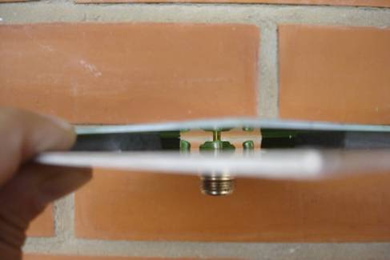 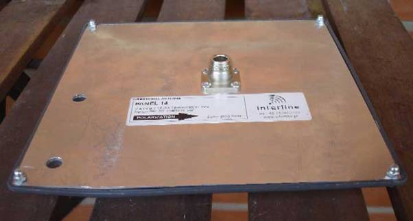
Medidas Reales Corregidas (Las de arriba son Incorrectas):
Esquema de la placa pcb con las medidas y fotolito para la antena podéis agrandarlo hasta las medidas reales y después imprimirlo, os recuerdo que las medidas son muy importantes y que cuanto más se alejen de las originales, peores prestaciones obtendremos.
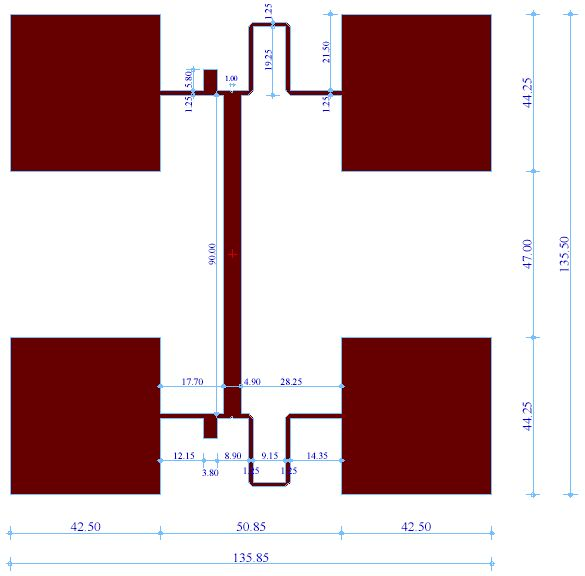 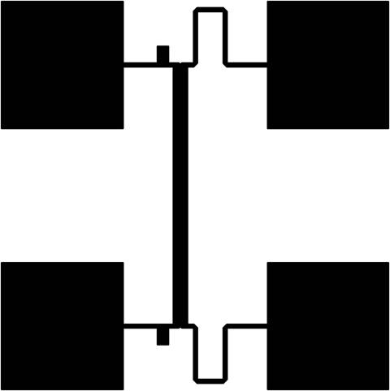
Si seguís el Tutorial de construcción de circuitos impresos podéis ver los distintos métodos de construcción.
Una vez lista la placa de circuito realizar la perforación en el punto central
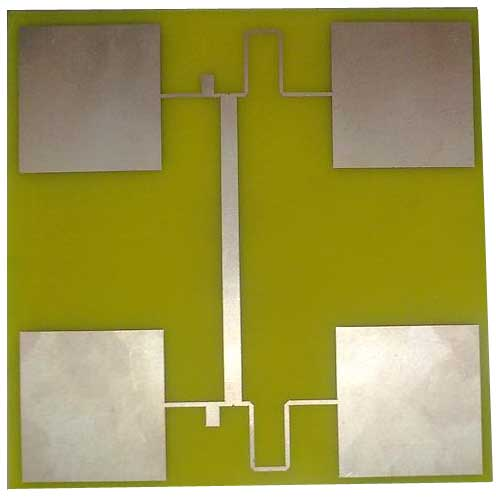 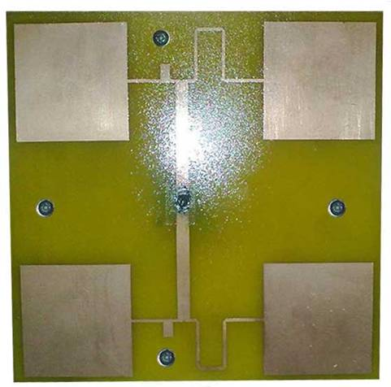
Tomar la chapa y realizar una perforación en el centro para poder montar el conector N y las 4 perforaciones para la sujeción del mismo por medio de los tornillos.
Montar 4 separadores
de plástico de
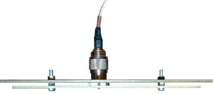 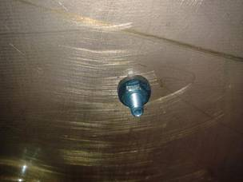 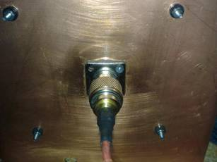
Por último monta la placa de circuito justo en el centro de la chapa introduciendo el trozo de alambre por el orificio realizado anteriormente, sujetando esta por medio de pegamento, soldar la placa de circuito al alambre de cobre.
Por ultimo armar los conectores en el cable como corresponda según el caso conectar y probar.
Si desean tener esta antena al exterior les recomiendo que le monten una caja plástica para evitar la humedad. Para saber que tipo de caja es conveniente os diré un pequeño truco como la frecuencia de trabajo va a ser la misma que la de un microondas, pues la metemos en un microondas y al lado un vaso con agua, si sale el agua caliente y la caja de plástico no ha cogido calor significa que es valida ya que no tendremos perdidas de señal con ella.
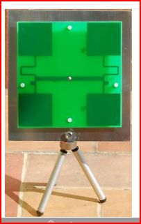 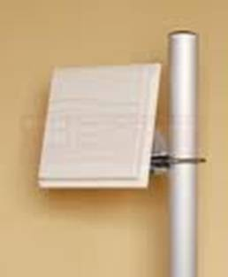
Y por ultimo podemos ver 2 formas de sujetar la antena una de forma portátil y la otra en posición fija.